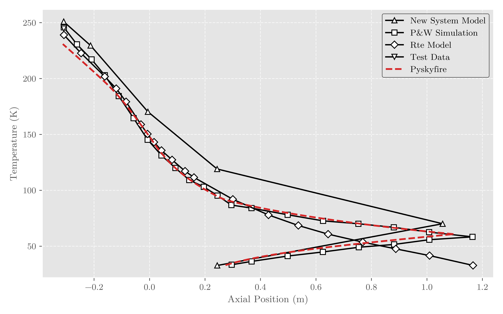
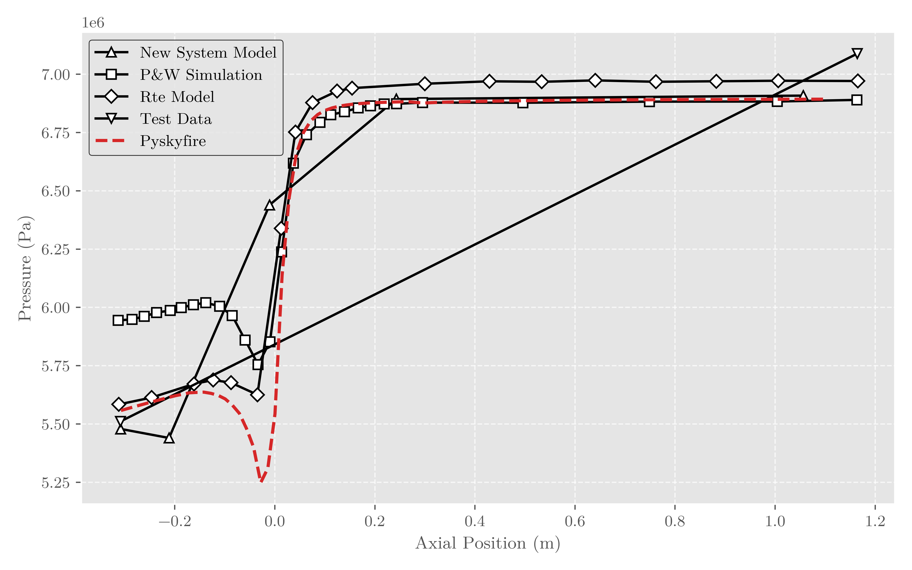
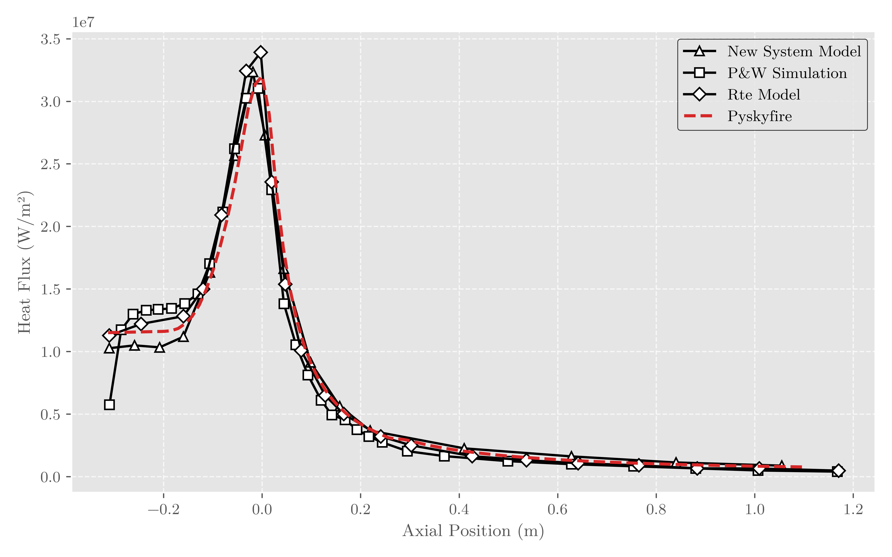
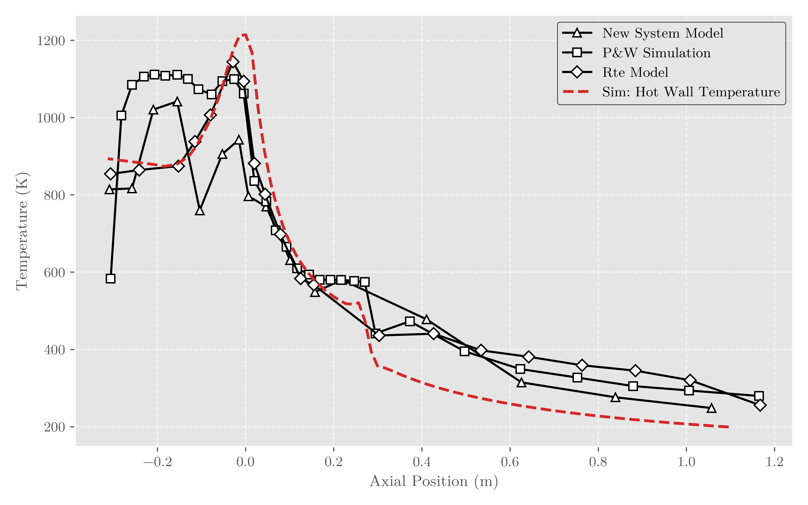
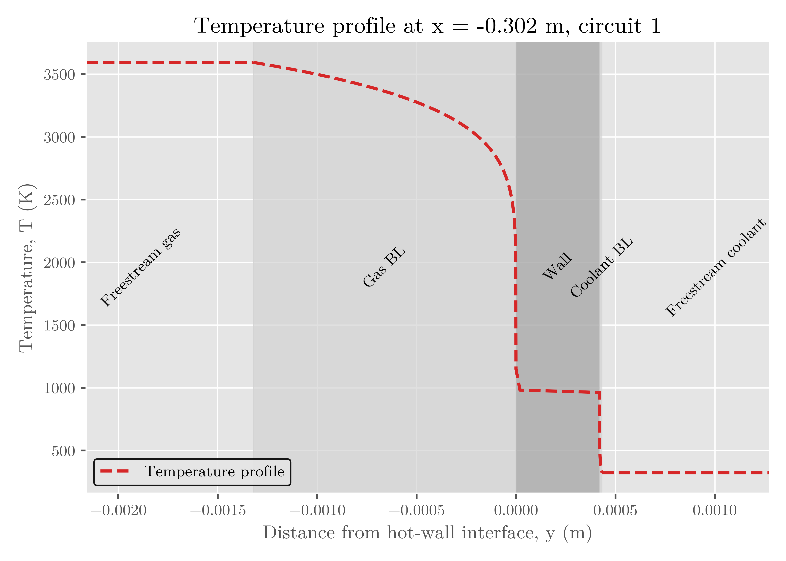
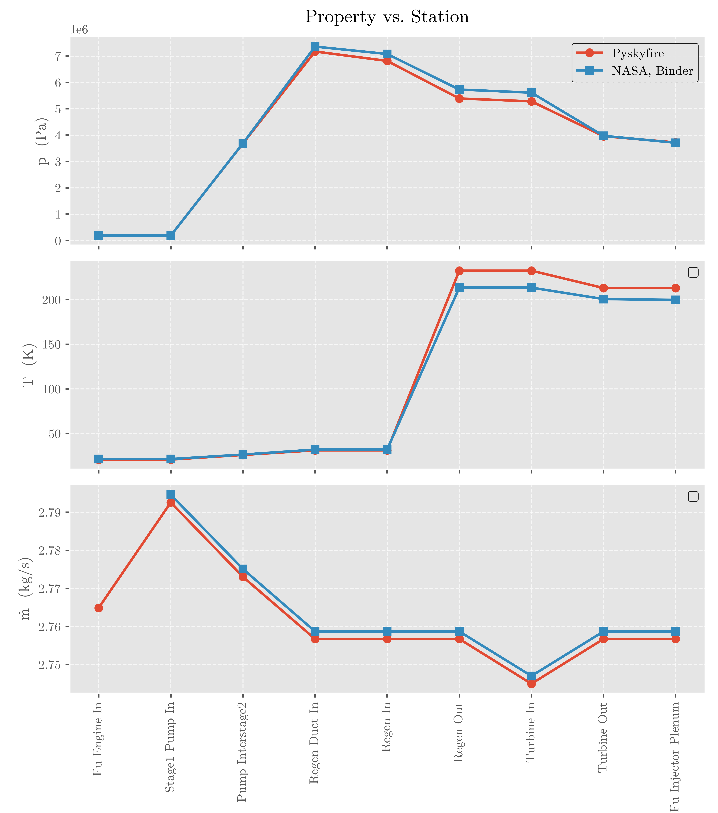

Capabilities¶
This page shows what Pyskyfire can do at-a-glance. The goal of this page is to give you an overview of the current capabilities of the package, so that you can better understand if it fits your needs.
Generate thrust chamber and nozzle geometry¶
Sizes the throat and nozzle from propulsion inputs such as:
propellant combination
fuel and oxidizer inlet state
chamber pressure
mixture ratio
thrust
exit pressure or expansion target
ambient pressure
characteristic chamber length, \(L^*\)
Generate chamber geometry from chamber volume, contraction ratio, converging angle, throat radius, and chamber/nozzle blend radii.
Generate bell nozzles using a Rao-style thrust-optimized parabolic contour.
Generate conical nozzles for simpler comparison cases.
Estimate hot-gas and nozzle performance¶
Solve chemical-equilibrium-based thrust chamber performance using NASA CEA as a backend.
Estimate useful propulsion parameters such as:
vacuum and/or ambient specific impulse
characteristic velocity, \(c^*\)
thrust coefficient, \(C_F\)
total mass flow rate
oxidizer and fuel mass flow rate
throat radius and throat area
expansion ratio
chamber volume from \(L^*\)
Generate hot-gas property distributions throughout the chamber and nozzle, including quantities such as:
pressure
temperature
Mach number
molecular mass
ratio of specific heats
enthalpy
specific heat
thermal conductivity
viscosity
Prandtl number
density
speed of sound
Solve regenerative cooling problems¶
Solve regenerative cooling along user-defined cooling circuits.
Support multiple cooling passes over different parts of the thrust chamber.
Support co-current and counter-current coolant flow.
Support different coolants in different cooling circuits.
Uses fluid property models for a wide range of liquid and gaseous coolants.
Model coolant pressure drop, temperature rise, velocity, heat flux, and wall temperatures along the engine.
Define cooling circuits over arbitrary axial spans of the thrust chamber.
Support complex cooling channel layouts, including:
straight channels
slanted or helical channels
interleaved channel circuits
circuits with different channel counts
circuits covering different chamber/nozzle regions
Support multiple cooling-channel cross-section models.
Support variable channel height, width, roughness, and hydraulic geometry along the engine.
Support multi-material chamber walls, enabling studies of:
layered wall temperature drops
thermal barrier coatings
Estimate temperature profile from hot gas through boundary layer, multi material-walls, and coolant boundary layer.





Model film cooling¶
Solve film cooling cases for sub-critical pressure conditions.
Model coolant injection, entrainment, and film-cooling heat-transfer effects using implemented film-cooling correlations.
Use film-cooling calculations as a separate analysis path or as a basis for future coupling to regenerative cooling models.
Solve full engine-cycle networks¶
Represent an engine as a network of connected thermodynamic stations, signal variables, and component blocks.
Solve expander-cycle-style engine architectures containing:
pumps
turbines
regenerative cooling passages
ducts
valves
injectors
mass-flow splitters
mass-flow mergers
recirculation paths
Solve coupled pump, turbine, pressure-loss, coolant-heating, and thrust-chamber constraints.
Track pressure, temperature, mass flow, and thermodynamic state through the engine.
Represent both fuel-side and oxidizer-side flow paths.
Use the engine-network formulation to investigate different expander-cycle layouts and pressure budgets.

Analyze pumps and turbomachinery¶
Provide pump and turbine utility models for engine-cycle calculations.
Estimate pump power, turbine power, pressure rise, pressure drop, and efficiency effects.
Support first-order sizing and analysis of rotating machinery components used in liquid rocket engine cycles.
Include pump-related geometry and visualization utilities for early-stage turbopump design work.
Generate plots and reports¶
Generate built-in plots for common engine analysis outputs, including:
thrust chamber contour
coolant pressure
coolant temperature
coolant velocity
wall temperature
heat flux
coolant flow area
hot-gas transport properties
engine-network diagrams
pressure-temperature diagrams
Generate standalone HTML reports containing tables, plots, images, and embedded interactive content.
Save and reload analysis results for post-processing.
Visualize cooling-channel geometry in 3D¶
Generate 3D visualizations of thrust chamber cooling-channel geometry.
Render cooling channels with their actual centerline placement and cross-section geometry.
Visualize interleaved and multi-pass cooling layouts.
Export an interactive browser-based 3D viewer for documentation or report generation.
Embed a rotatable 3D engine model directly into generated HTML documentation.
Support scripted design studies¶
Use Python scripts to define complete engine cases, run analyses, and post-process results.
Modify geometry, materials, coolant circuits, propellants, pressures, mixture ratio, thrust level, and cycle parameters programmatically.
Use examples and validation cases as templates for new thrust chamber and engine-cycle studies.